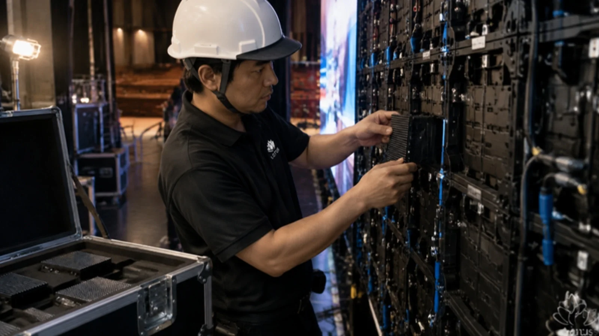

LOTUS VISUAL JOURNAL / 深い話 #01
全部入れ替えても、同じ画面と言えるか。
テセウスの船と、伊勢の遷宮
傷んだ板を 1 枚ずつ取り替えていった船は、最後の 1 枚を替えたとき、まだ同じ船でしょうか。
2,000 年以上前に書き残されたこの問いに、哲学者たちはいまも決着をつけていません。ところが日本には、1,300 年以上、この問いに「実地で」答え続けてきた場所があります。
01 / ATHENSアテナイの港に残された船
ギリシャの伝記作家プルタルコスは、英雄テセウスの生涯を書いた『テセウス伝』に、ひとつの船のことを書き残しています。テセウスが若者たちを連れて帰還したときの 30 本櫂の船を、アテナイの人々はずっと後の時代まで保存していた。古い木材が朽ちると取り外し、新しい丈夫な木材を入れていった、と。
そしてプルタルコスは、こう付け加えます。この船は哲学者たちのあいだで、「増えていくもの」をめぐる議論の格好の例になった。ある者は同じ船のままだと言い、ある者は同じではないと言った。
船の話なのに、問われているのは「同じ」とは何か、という一点です。材料が同じなら同じなのか。形と役目が続いていれば同じなのか。
02 / HOBBES古い板を、もう一度組み立てたら
17 世紀、イギリスの哲学者トマス・ホッブズは、この問いにもう一段ひねりを加えました(『物体論』、1655 年)。もし誰かが、取り外された古い板を捨てずに保管しておき、あとで同じ順番に組み立て直したらどうなるか。港には「板を入れ替え続けた船」と「古い板で組み直した船」の 2 隻が並びます。どちらが、本物のテセウスの船なのか。
材料で考えれば、古い板の船が本物です。けれど、港でずっと使われ、手入れされ、テセウスの船として扱われてきたのは、入れ替え続けた船のほうです。ここで「同じ」には少なくとも二つの意味があることが見えてきます。材料が同じ、という意味と、続いている、という意味。
テセウスの船の問いは、正解を当てるクイズではありません。「自分は何をもって同じと呼んでいるのか」を、はっきりさせるための道具です。
03 / ISE20 年ごとに、すべてを新しく
伊勢神宮では、20 年に一度、社殿を新しく造り替え、御装束や神宝も新しくして、大御神に新しい宮へ遷っていただきます。式年遷宮です。神宮司庁によれば、持統天皇 4 年(690 年)から 1,300 年以上続けられ、平成 25 年(2013 年)に 62 回目が行われました。次の第 63 回は 2033 年の秋。その準備はもう始まっていて、2025 年 6 月には御樋代木を迎える行事が三重県内の 6 市町を巡り、2026 年 5 月からは「令和のお木曳」が予定されています。
板を 1 枚ずつ替えたテセウスの船とは違い、伊勢は丸ごと新しくします。それでも、誰も「別の神宮になった」とは言いません。神宮司庁はその意義を、20 年に一度造り替えられる常に瑞々しい社殿で、永遠に変わらないお祭りが行われることにある、と説明しています。
ここで、テセウスの船の問いがひっくり返ります。材料を残すことで「同じ」を守るのではなく、材料をすべて新しくし続けることで、変わらないものを守っている。変わらないのは木ではなく、祭りの形と、それを受け継ぐ人の営みのほうです。
LOTUS VISUAL の現場では
LED の大型画面は、小さなパネルを何十枚、何百枚と組んでできています。現場では、点かなくなったモジュールや傷んだパネルを入れ替えるのは日常の仕事です。何年も使ううちに、ひとつの画面を構成する部品の多くが入れ替わっていきます。テセウスの船は、倉庫の中にもあるわけです。
そのとき私たちが「同じ画面」として守っているのは、パネルの一枚一枚ではありません。新しい部品が入っても、周りと色や明るさがそろって見えるように合わせること。組み方・つなぎ方・点検の順番を、決めた手順どおりに繰り返すこと。人が入れ替わっても、同じ順番で同じ確認ができること。伊勢の言葉を借りれば、変わらない「お祭り」の側です。
だから手順書は、材料ではなく「続いているもの」を書き残すためにあります。手順書の話は 2,000 ページの「完成しないマニュアル」 にも書きました。
今日の持ち帰り
- 「同じ」には二つある。材料が同じ、と、続いている。自分がどちらを守りたいのかを先に決める。
- 変わらないために、新しくする。伊勢は 1,300 年以上、すべてを造り替えることで、変わらないお祭りを守ってきた。
- 守るべきは手順。部品も人も入れ替わる。それでも同じ仕上がりが出るなら、それは同じ画面で、同じチームだ。
出典:プルタルコス『対比列伝』「テセウス伝」23 節(Perseus Digital Library 所収の英訳。30 本櫂の船の保存、古い木材の入れ替え、哲学者の議論の例)、トマス・ホッブズ『物体論』(De Corpore、1655 年)第 2 部第 11 章(古い板を組み直した船の問い)、神宮司庁「式年遷宮」(持統天皇 4 年〈690 年〉以来 1,300 年以上、平成 25 年に第 62 回、20 年ごとの造り替えの意義)、観光三重「2033年 伊勢神宮式年遷宮への道」(第 63 回は 2033 年秋、2025 年 6 月 8〜10 日の御樋代木奉迎送行事、令和 8 年・9 年のお木曳の日程)。2026 年 11 月 10 日閲覧。LED の部品交換の話は一般的な説明で、特定の案件を表しません。